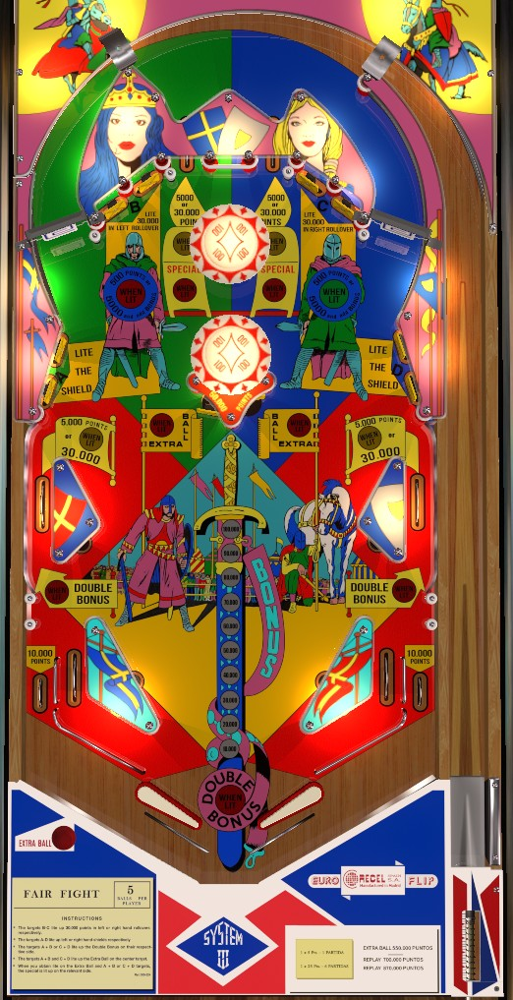

Hit either target in each of the four 2-banks of standup targets to increase the targets' value, advance the base bonus, light the top and side lanes for 30,000 points, and light the side lanes for double bonus. With bonus maxed and doubled, either shoot the spinners to try to earn 30,000-point top lanes when lit, or shoot the swiveling target in the center for 50,000 points at a time.
The below picture of Fair Fight's playfield was taken from the VPX recreation by JPSalas et al.

There are 4 banks of 2 standup targets each: A on the middle left, B in the upper left, C in the upper right, and D in the middle right. To begin each ball, these targets score 500 points. Each bank has an award associated with it; hitting just one target in a bank qualifies that bank's award. (In the VPX recreation of Fair Fight, you are required to hit both targets in a bank to qualify its award, with no indication that this is necessary; this behavior does not align with footage of the actual table.)
Collecting the A lights the Red Shield. With the Red Shield lit, any standup target in the A or B banks scores 5,000 points and a bonus advance instead of just 500 points. There appears to be a setting that doubles all bonus advances, meaning a single lit target would add 20,000 to the base bonus instead of 10,000.
Collecting the B lights the left top lane and middle left side lane to score 30,000 points instead of 5,000.
Collecting the C lights the right top lane and middle right side lane to score 30,000 points instead of 5,000.
Collecting the D lights the Green Shield, which increases the value of targets in the C and D banks to 5,000 points plus one (or two) bonus advance(s).
Collecting both A and B lights the middle left side lane for Double Bonus. Collecting both C and D lights the middle right side lane for Double Bonus.
Collecting all of A-B-C-D lights the center swiveling target for Extra Ball. Once A-B-C-D has been completed, recollecting both A and B lights the left top lane for Special, and recollecting both C and D lights the right top lane for Special. Lighting a top lane for Special will unlight the 30,000 point rollover lanes on that side of the table (left or right) and they must be reactivated at the B or C targets respectively.
The center standup target should always be poking out of one side of the center structure, which is attached to the lower pop bumper. Hitting the target will rotate its position within the structure so that it begins poking out of the other side instead. Hitting this target and moving it scores 50,000 points at all times, as well as an extra ball if A-B-C-D has been completed on this ball (maximum 1 extra ball per ball in play).
Pop bumpers and spinners always score 100 points. There are no one-way gates at the tops of the orbits, so it is not guaranteed that a plunged ball or orbit shot will make it into one of the top lanes.
There are switches within the triangle-shaped walls above the slingshots that form the middle side lanes. These switches and the slingshots score 30 points.
In lanes score 500 points. Out lanes score 10,000 points. These values cannot be increased, and the bottom lanes can never award bonus advances. The middle side lanes very smoothly feed the in lanes, but to make this possible, the in/out lane separator rail is much lower than the tops of the slingshots, making out lane saves quite difficult.
The only way to advance the bonus is to light a Shield (Red on the left by hitting an A target, or Green on the right by hitting a D target), then shooting standup targets on the same side of the playfield as lit Shields (A and B if Red is lit, C and D if Green is lit). Each target hit after following these steps will add either 10,000 or 20,000 points to the base bonus, seemingly depending on game settings, and up to a maximum of 150,000 points. Double Bonus is awarded by qualifying both A and B then shooting the middle left side lane, or qualifying both C and D then shooting the middle right side lane. Max bonus is 2x 150,000 = 300,000 points. Double Bonus is never given for free. The first bonus advance is also never given for free, making it possible to drain with 0 bonus. There is no mid-ball bonus collect or bonus holdover of any kind.